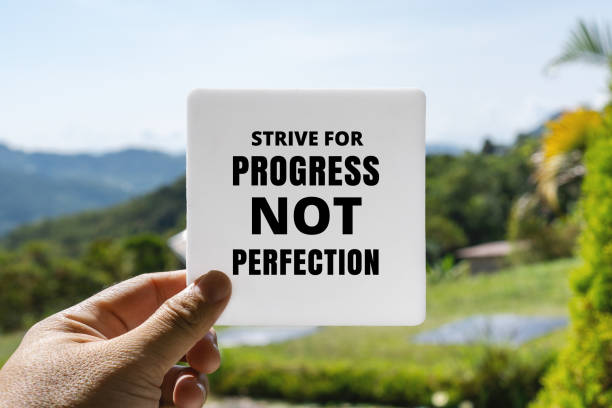

bearcin46
273 likes
Bearcin46 Cindrella Love 😍View all 230 Comments
Bearcin46
@sammydreay1
😍
Bearcin46
@matwalden21
🔥
1 hour ago
ashley
Namma Nagercoil27 likes
ashley Live your life fully 🤪View all 5 Comments
ashley
@vladhun48
🥳
Leave your comments here...
1 hour ago
Suggested for you
_she_rises_

10,255 likes
_she_rises_View all 59 Comments
Leave your comments here...
2 days ago
Because you interacted with a post from joenansandiego
joenansandiego

6,255 likes
joenansandiegoView all 69 Comments
Leave your comments here...
4 days ago
bearcin46 and abisha
273 likes
Bearcin46 Nature can be admired by anyone 😍View all 230 Comments
Bearcin46
@sammydreay1
😍
Bearcin46
@matwalden21
🔥
1 hour ago